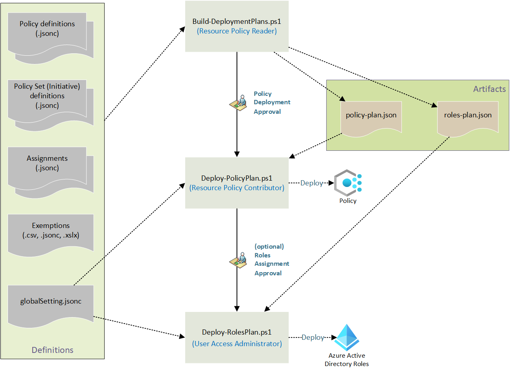

Enterprise Azure Policy as Code (EPAC)
Overview
Enterprise Azure Policy as Code or EPAC for short comprises a number of scripts which can be used in CI/CD based system or a semi-automated use to deploy Policies, Policy Sets, Assignments, Policy Exemptions and Role Assignments.
Main features include:
- Multi-tenant/environment policy deployment
- Easy CI/CD Integration
- Extract existing policy objects from an environment
- Support JSON and CSV inputs for large complex policies
- PowerShell Module
- Integration with Azure Landing Zone recommended policies
- Starter Kit with examples
- Schema to provide Intellisense for VS Code development
Who Should use EPAC?
EPAC is designed for organizations with a large number of Policies, Policy Sets and Assignments. It is also designed for organizations with multiple tenants and/or environments. You can also combine ALZ and EPAC through the provided "Integration of EPAC with Azure Landing Zones".
EPAC can be used by small organizations with a small number of Policies, Policy Sets and Assignments. Depending on their DevSecOps maturity, Azure Landing Zones direct implementation of Policies might be a better choice.
For extremely small Azure customers with one or two subscriptions Microsoft Defender for Cloud automated Policy Assignments for built-in Policies is sufficient.
Tracking EPAC Usage
Starting with v8.0.0, Enterprise Policy as Code (EPAC) is tracking the usage using Customer Usage Attribution EPAC is in the role of a partner as defined in the linked documentation. We use this data to justify the investment in EPAC and to prioritize features.
You have the right and means to opt-out; see Usage Tracking.
Project Links
- GitHub Repo
- GitHub Issues
- Starter Kit
- Enterprise Policy as Code PowerShell Module
- Azure Enterprise Policy as Code – A New Approach
- Azure Enterprise Policy as Code – Azure Landing Zones Integration
EPAC and Defender for Cloud Assignments
Defender for Cloud uses Azure Policy Assignments to enable and configure the various capabilities. Prior to v9.0.0 EPAC removed these subscription-level assignments.
- Policy Assignments required for Defender plans (e.g., SQL, App Service, ...). These is no longer managed (removed) by EPAC v9.0.0 and later.
- Policy Assignments required for Security policies (e.g., Microsoft Cloud Security Benchmark, NIST 800-53 Rev 5, NIST 800-171, ...). The default
desiredStatebehavior is to manage (remove) these assignments. SettingkeepDfcSecurityAssignmentstotruedisables the management (removal) by EPAC.
Carefully review Managing Defender for Cloud Assignments .
Terminology
| Full name | Simplified use in this documentation |
|---|---|
| Policy definition(s) | Policy, Policies |
| Initiative definition(s) or Policy Set definition(s) | Policy Set(s) |
| Policy Assignment(s) of a Policy or Policy Set | Assignment(s) |
| Policy Assignment(s) of a Policy Set | Policy Set Assignment |
| Policy Exemption(s) | Exemption(s) |
| Role Assignment(s)s for Managed Identities required by Policy Assignments | Role Assignment(s) |
| Policies, Policy Sets, Assignments and Exemptions | Policy resources |
Deployment Scripts
Three deployment scripts plan a deployment, deploy Policy resources, and Role Assignments respectively as shown in the following diagram. The solution consumes definition files (JSON and/or CSV files). The planning script (Build-DeploymentPlan) creates plan files (policy-plan.json and roles-plan.json) to be consumed by the two deployment steps (Deploy-PolicyPlan and Deploy-RolesPlan). The scripts require Reader, Contributor and User Access Administrator privileges respectively as indicated in blue text in the diagram. The diagram also shows the usual approval gates after each step/script for prod deployments.

CI/CD Tool Compatibility
Since EPAC is based on PowerShell scripts, any CI/CD tool with the ability to execute scripts can be used. The starter kits currently include pipeline definitions for Azure DevOps and GitHub Actions. Additional starter kits are being implemented and will be added in future releases.
Multi-Tenant Support
EPAC supports single and multi-tenant deployments from a single source. In most cases you should have a fully or partially isolated area for Policy development and testing, such as a Management Group. An entire tenant can be used; however, it is not necessary since EPAC has sophisticated partitioning capabilities.
In some multi-tenant implementations, not all policies, policy sets, and/or assignments will function in all tenants, usually due to either built-in policies that don't exist in some tenant types or unavailable resource providers. In order to facilitate multi-tenant deployments in these scenarios, utilize the " epacCloudEnvironments" property to specify which cloud type a specific file should be considered in. For example in order to have a policy definition deployed only to epacEnvironments that are China cloud tenants, add a metadata property like this to that definition (or definitionSet) file:
"metadata": {
"epacCloudEnvironments": [
"AzureChinaCloud"
]
},
For assignment files, this is a top level property on the assignment's root node:
"nodeName": "/root",
"epacCloudEnvironments": [
"AzureChinaCloud"
],
Operational Scripts
Scripts to simplify operational task are provided. Examples are:
Build-PolicyDocumentationgenerates documentation in markdown and csv formats for Policy Sets and Assignments.Create-AzRemediationTasksto bulk remediate non-compliant resources for Policies withDeployIfNotExistsorModifyeffects.
Understanding EPAC Environments and the pacSelector
Note
Understanding of this concept is crucial. Do not proceed until you completely understand the implications.
EPAC has a concept of an environment identified by a string (unique per repository) called pacSelector. An environment associates the following with the pacSelector:
cloud- to select commercial or sovereign cloud environments.tenantId- enables multi-tenant scenarios.rootDefinitionScope- scope for custom Policy and Policy Set definition deployment.- Optional: define
desiredState
Note
Policy Assignments can only defined at rootDefinitionScope and child scopes (recursive).
These associations are stored in global-settings.jsonc in an element called pacEnvironments.
Like any other software or IaC solution, EPAC needs areas for developing and testing new Policies, Policy Sets and Assignments before any deployment to EPAC prod environments. In most cases you will need one management group hierarchy to simulate EPAC production management groups for development and testing of Policies. EPAC's prod environment will govern all other IaC environments (e.g., sandbox, development, integration, test/qa, pre-prod, prod, ...) and tenants. This can be confusing. We will use EPAC environment(s) and IaC environment(s) to disambiguate the environments.
In a centralized single tenant scenario, you will define two EPAC environments: epac-dev and tenant. In a multi-tenant scenario, you will add an additional EPAC environment per additional tenant.
The pacSelector is just a name. We highly recommend to call the Policy development environment epac-dev, you can name the EPAC prod environments in a way which makes sense to you in your environment. We use tenant, tenant1, etc in our samples and documentation. These names are used and therefore must match:
- Defining the association (
pacEnvironments) of an EPAC environment,managedIdentityLocationandglobalNotScopesinglobal-settings.jsonc - Script parameter when executing different deployment stages in a CI/CD pipeline or semi-automated deployment targeting a specific EPAC environments.
scopes,notScopes,additionalRoleAssignments,managedIdentityLocations, anduserAssignedIdentitydefinitions in Policy Assignment JSON files.
Coexistence and Desired State Strategy
EPAC is a desired state system. It will remove Policy resources in an environment which are not defined in the definition files. To facilitate transition from previous Policy implementations and coexistence of multiple EPAC and third party Policy as Code systems, a granular way to control such coexistence is implemented. Specifically, EPAC supports:
- Centralized: One centralized team manages all Policy resources in the Azure organization, at all levels (Management Group, Subscription, Resource Group). This is the default setup.
- Distributed: Multiple teams manage Policy resources in a distributed manner. Distributed is also useful during a brownfield deployment scenario to allow for an orderly transition from pre-EPAC to EPAC.
Desired state strategy documentation can be found here.. The short version:
fulldeletes any Policies, Policy Sets, Assignments, and Exemptions not deployed by this EPAC solution or another EPAC solution.*ownedOnlydeletes only Policies with this repos’s pacOwnerId. This allows for a gradual transition from your existing Policy management to Enterprise Policy as Code.*- Policy resources with another
pacOwnerIdmetadatafield are never deleted.
Warning
If you have a existing Policies, Policy Sets, Assignments, and Exemptions in your environment, you have not transferred to EPAC, do not forget to include the new desiredState element with a strategy of ownedOnly. This is the equivalent of the deprecated "brownfield" variable in the pipeline. The default strategy is full.
Understanding differences between usage of EPAC, AzAdvertizer and AzGovViz
Enterprise Policy-as-Code (EPAC), AzAdvertizer and Azure Governance Visualizer (AzGovViz) are three distinct open source projects or tools internally developed and maintained by Microsoft employees, each helping address different needs in enterprise scale management and governance of Azure environments.
-
AzAdvertizer - AzAdvertizer is a publicly accessible web service that provides continually up-to-date insights on new releases and changes/updates for different Azure Governance capabilities such as Azure Policy's built-in policy and initiative (policy set) definitions, Azure aliases, Azure security & regulatory compliance controls, Azure RBAC built-in role definitions and Azure resource provider operations.
-
Azure Governance Visualizer (aka AzGovViz) - AzGovViz is an open source community project that provides visualization and reporting solution for any customer Azure environment or estate, delivering a rich set of detailed insights covering tenant management group hierarchies, RBAC assignments, Azure policy assignments, Blueprints, Azure network topology and much more. AzGovViz is listed as recommended tool in use for both Microsoft Cloud Adoption Framework (CAF) and Microsoft Well Architected Framework (WAF).
-
Enterprise Policy-as-Code (aka EPAC) - EPAC is an open source community project that provides a CI/CD automation solution for the development, deployment, management and reporting of Azure policy at scale. EPAC can maintain a policy "desired state" to provide a high level of assurance in highly controlled and sensitive environments, and a means of managing policy exemptions. While it uses standard JSON file structure for its repositories, operation and maintenance of policy and policy sets can actually be done via CSV files, reducing the skill expertise needed to operate the solution once implemented.
The table below provides a summary functions/features comparison between the three solutions/tools.
| Function/Feature | AzAdvertizer | AzGovViz | EPAC |
|---|---|---|---|
| Purpose | Detailed insight tool on released Azure public cloud governance features like current built-in polices and initiatives | Azure environment governance reporting and monitoring solution exposing tenant config/deployment detail of tenant hierarchies, RBAC assignments, policies, blueprints | Azure environment automated policy governance deployment, management and reporting solution |
| Implementation | hosted web service | customer deployment, interactive Azure governance management and security reporting tool | customer deployment, deployment automation and reporting tool |
| Requirements | browser | PowerShell 7.0.3 | PowerShell 7.3.1 |
Support
Please raise issues via the GitHub repository.
Contributing
This project welcomes contributions and suggestions. Most contributions require you to agree to a Contributor License Agreement (CLA) declaring that you have the right to, and actually do, grant us the rights to use your contribution. For details, visit https://cla.opensource.microsoft.com.
When you submit a pull request, a CLA bot will automatically determine whether you need to provide a CLA and decorate the PR appropriately (e.g., status check, comment). Simply follow the instructions provided by the bot. You will only need to do this once across all repos using our CLA.
This project has adopted the Microsoft Open Source Code of Conduct. For more information see the Code of Conduct FAQ or contact opencode@microsoft.com with any additional questions or comments.
Trademarks
This project may contain trademarks or logos for projects, products, or services. Authorized use of Microsoft trademarks or logos is subject to and must follow Microsoft's Trademark & Brand Guidelines. Use of Microsoft trademarks or logos in modified versions of this project must not cause confusion or imply Microsoft sponsorship. Any use of third-party trademarks or logos are subject to those third-party's policies.